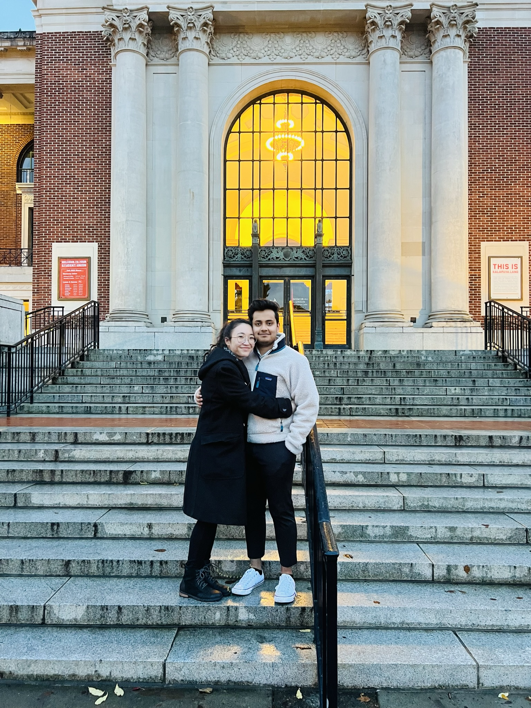
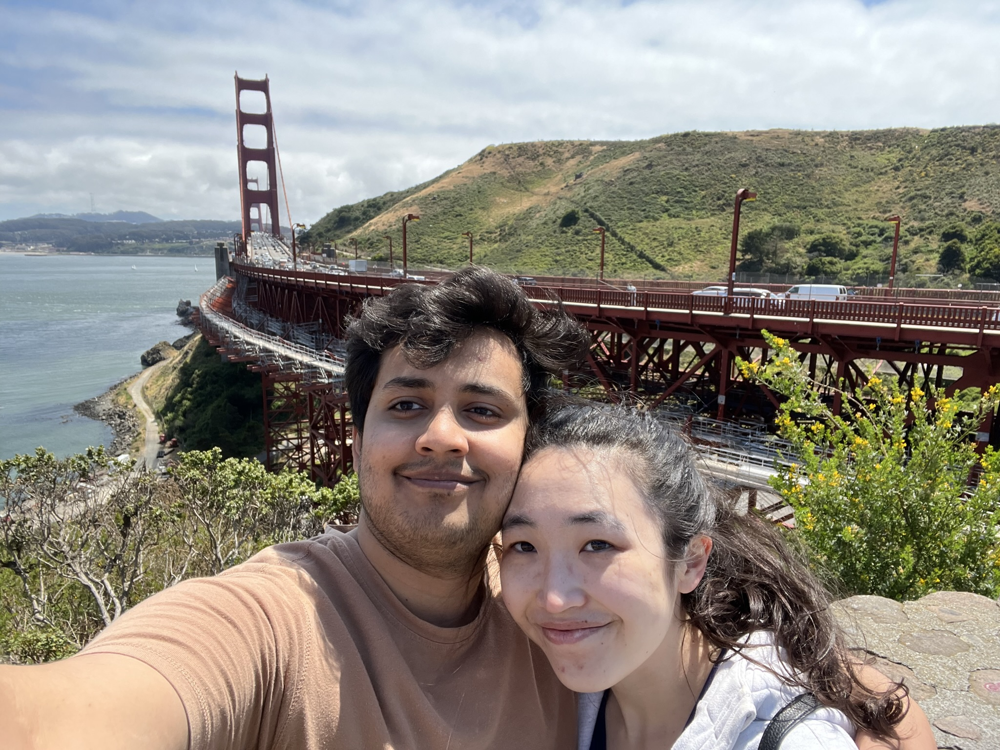
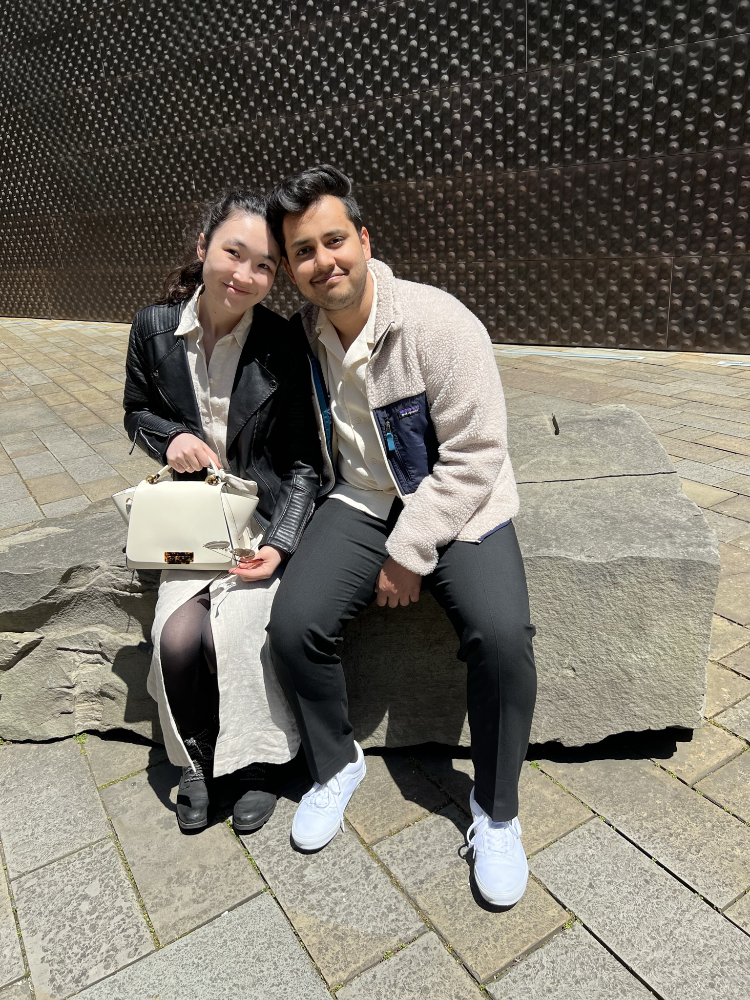
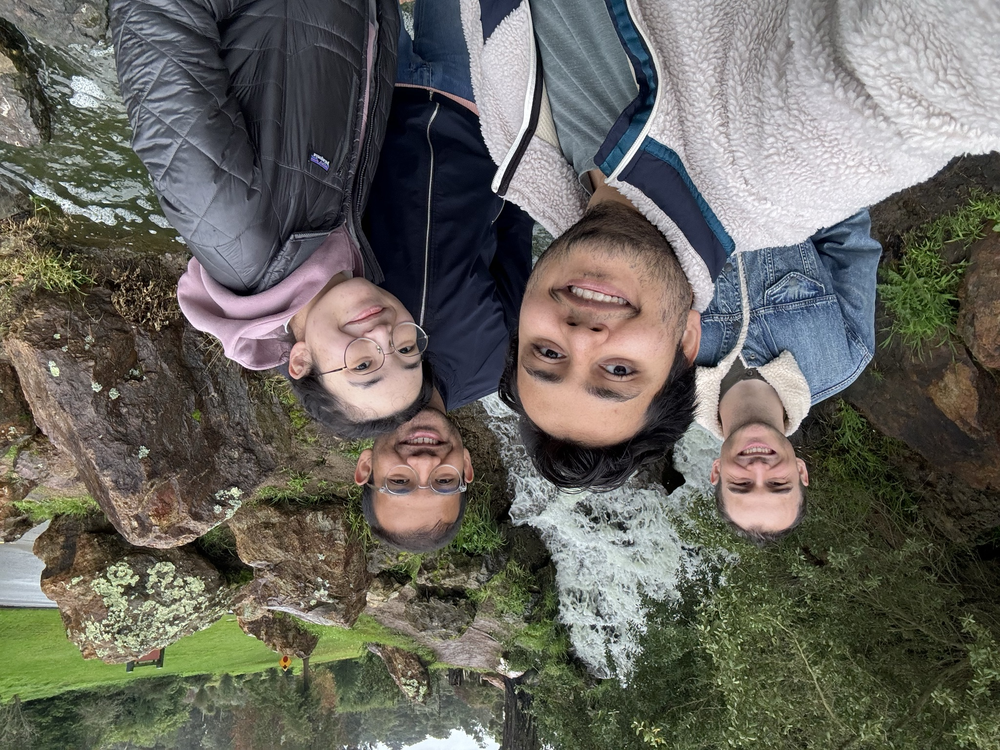

Bettina and Ajay met in July of 2022.
At the time, Ajay was a student at Oregon State University, living in Corvallis, Oregon. Bettina was — and still is — a software engineer living in San Francisco, California.
For two years, they dated long distance, making the trip between Oregon and California whenever they could — and taking the chance to explore new cities together along the way.


In May of 2024, Ajay moved to San Francisco, and after two years apart they were finally in the same city.

Together, they fell into the rhythm of the city — long walks through new neighbourhoods, and weekends with no particular plan.

They share a love of museums, good food, and the friends who've become family.


Now the next chapter begins in Bengaluru — and they can't wait to celebrate it with you.